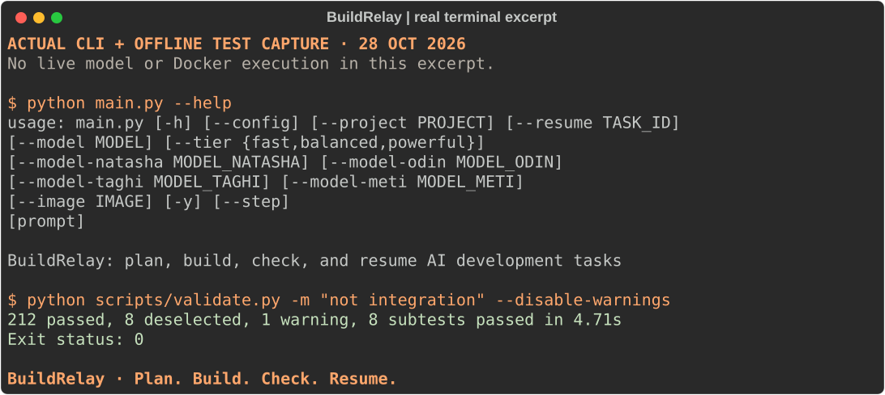

A real terminal capture
Inspect the CLI and its offline tests before running a model-powered task.
What this capture demonstrates
This is actual command output recorded locally on 28 October 2026. It shows CLI capabilities and deterministic platform checks. It is not an AI implementation run, an integration test, or a benchmark.

Recorded output
No animation or simulated success messages. Open the full plain-text transcript.
BuildRelay — actual local CLI and offline test capture
Recorded: 2026-10-28
This is not an AI implementation run. No live model, Docker, or Graphify integration was exercised.
$ python main.py --help
usage: main.py [-h] [--config] [--project PROJECT] [--resume TASK_ID]
[--model MODEL] [--tier {fast,balanced,powerful}]
[--model-natasha MODEL_NATASHA] [--model-odin MODEL_ODIN]
[--model-taghi MODEL_TAGHI] [--model-meti MODEL_METI]
[--image IMAGE] [-y] [--step]
[prompt]
BuildRelay: plan, build, check, and resume AI development tasks
positional arguments:
prompt Task description or prompt
options:
-h, --help show this help message and exit
--config Launch interactive onboarding & configuration wizard
--project PROJECT Parent project ID
--resume TASK_ID Resume a saved local task
--model MODEL Model identifier (e.g. openai:gpt-4o,
anthropic:claude-3-5-sonnet-latest)
--tier {fast,balanced,powerful}
Model tier preset (fast, balanced, powerful)
--model-natasha MODEL_NATASHA
Model override for Natasha (Coordinator)
--model-odin MODEL_ODIN
Model override for Odin (Researcher)
--model-taghi MODEL_TAGHI
Model override for Taghi (Architect)
--model-meti MODEL_METI
Model override for Meti (Implementer)
--image IMAGE Docker base image override (e.g. python:3.11-slim)
-y, --yes, --auto Headless mode; accept defaults without interactive
prompts
--step Interactive step gates between each agent lead
Exit status: 0
$ python scripts/validate.py -m "not integration" --disable-warnings
........................................................................ [ 36%]
................................................................ [ 69%]
............................................................ [100%]
196 passed, 8 deselected, 1 warning, 8 subtests passed in 5.08s
Exit status: 0
Try a development task
After setup, use this small task as a reproducible demo prompt. The following is a suggested command, not output from the capture above.
python main.py "Build a Python CSV validator that reports missing required columns and invalid numeric amounts. Include valid and invalid fixtures, automated tests, and a README with run commands." --project csv-demo --image python:3.11-slim --stepInspect the plan, generated files, and phase results. Keep provider sign-in and configuration outside any screen recording. Only demonstrate resume with a task that was actually interrupted or failed.